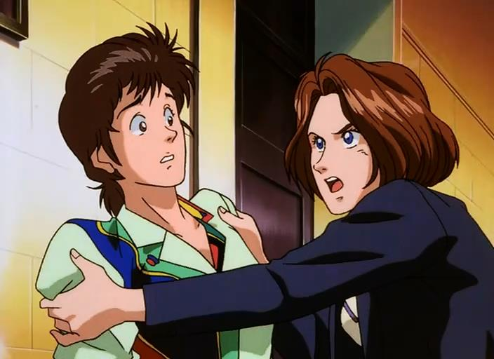

City Hunter 96, The Secret Service
Cet épisode spécial a été réalisé et produit par la même équipe que celle de City Hunter 3, avec la participation de Tsukasa HOJO pour la conception et le design de certains personnages, notamment celui d’Anna.
Ce téléfilm raconte l’histoire d’une jeune policière des services secrets qui doit protéger un important homme politique d’un pays d’Amérique du Sud, M. Mac GIRE. Or, Anna, cette jeune recrue des forces spéciales n’est autre que la fille de cet homme d’état (ben oui, ça se complique…). De plus, Anna rend son père responsable de la mort de sa mère et ne l’avait pas vu depuis 18 ans (ça, ça n’arrange rien…).
Anna va donc devoir protéger un homme qu’elle déteste. Ryo se trouve engagé pour protéger Anna, car elle se trouve en danger de part sa situation familiale avec Mac GIRE. En effet, Gonzales, un chef d’état et ancien mercenaire connaissant Mac GIRE, décide de s’attaquer à ce que Mac GIRE a de plus précieux, sa fille. Il veut que d’une part, Mac GIRE renonce à se présenter aux élections et que d’autres part, il lui remette la carte d’une mine de diamants dont il est le seul à connaître l’emplacement.
Après quelques difficultés et quelques coups de la part des personnages féminins (Anna, Rosa… Ryo drague tout le temps), Ryo parviendra à rétablir la situation et le père de la fille réussiront à se réconcilier.
Ce téléfilm marquait le grand retour de City Hunter au Japon à la TV après 5 ans d’absence. Il comporte une bonne qualité graphique et rassemble tous les éléments qui ont fait le succès de la série.
AK Vidéo a sorti ce TV Spécial à la fois en version sous-titrée avec les noms japonais, et en version française avec les noms français de la série.
Le scénario du téléfilm est bien construit, Kaori est à présent considérée par Ryo comme une partenaire à part entière et tous deux forment l’équipe City Hunter.
Au niveau musical, Tatsumi YANO a réutilisé certains thèmes de la série TV en y ajoutant quelques nouveaux morceaux. En résumé, de bonnes musiques, même si elles n’égalent pas celles de la série TV.
| fiche technique |
|---|
| Durée: 90 mn |
| Année de production: 1995 |
| 1ère diffusion: 5 janvier sur NTV (Japon) |
| Auteur (Manga): Tsukasa HOJO |
| Réalisation: Kenji KODAMA (City Hunter 91) |
| Character Design: Sachiko KAMIMURA (City Hunter 1, 2 & 3) |
| Scénario: Akinori ENDO |
| Musiques: Tatsumi YANO (City Hunter, You’re Under Arrest) |
| Producteur: Sunrise |
City Hunter 97, Goodby My Sweet Heart
Dans ce téléfilm, Ryo et Kaori sont contactés par Emi MAKAZE, une jeune “idol” du moment, qui souhaite retrouver son frère aîné de retour au japon. Pour une fois, Ryo est un peu réticent et ne veut pas de ce travail (ben pourquoi ?… C’est bizarre vu qu’Emi est une jolie femme). Mais, Umibozu et Kaori étant fans de la jeune danseuse, ils parviendront à faire changer Ryo d’avis. Brillant étudiant, Takeaki MUTO, le frère adoptif de Emi fut le seul survivant durant un massacre pendant la guerre du Golfe, alors qu’il se trouvait dans la légion. Depuis ce temps, il semble rempli de haine envers tout le monde et sévit dans le monde de la pègre en se faisant appeler “le Professeur”. Celui-ci détourne un fourgon pénitentiaire et fait évader un mercenaire et un spécialiste en explosif. Ayant entendu parler de la réputation de City Hunter, il décide de se mesurer à Ryo.
Alors qu’Emi doit assurer l’inauguration d’une nouvelle trame de métro, La Yamanote (une des principales lignes du métro de Tokyo, au trajet en boucle), à pilotage automatique, le professeur décide à ce moment-là de soumettre le gouvernement à un chantage à la bombe et exige 10 milliards de yens, sinon il rase Shinjuku… En effet, Takeaki MUTO a réussi de façon subtile à piéger les wagons du nouveau métro (on l’appelle pas “le Professeur” pour rien…): dès 60 km/h, le système de détonation se met en veille et une bombe explosera aussitôt que la vitesse du train diminuera…(Si vous voulez mon avis, il a dû regarder Speed…( je dirait plutôt que ce sont les scénaristes qui ont dû trop regarder Speed, NDErwan)). Malgré toute l’ingéniosité du “Professeur”, le quartier de Shinjuku sera sauvé et le frère et la sœur se réconcilieront une dernière fois.
Les nouveautés sont présentes dans ce téléfilm. Notons l’arrivée d’un personnage secondaire, Erika, une “mama” de la pègre de Shinjuku et redoutable travesti à la voix bien masculine.
En effet, la figuration active de la population de Shinjuku prend pleinement part aux péripéties du détournement de la ligne de métro L’inscription dans la continuité est toujours de rigueur et les duels à mains armées sont présents. Ici, le ton est quelque peu différent des autres City Hunter. Les méchants ne sont pas vraiment marrants et leur mort est présente dans l’histoire. De même que les fans de la série ont mûri, City Hunter évolue ainsi peu à peu. Pour terminer, ce téléfilm donne quelques clins d’œil au reflet de la société : les personnages (Ryo, Saeko,…) utilisent tous le téléphone portable (c’est une mode au Japon ? (syndrome X-Files ?, NDErwan)).
| fiche technique |
|---|
| Durée: 90 mn |
| 1ère diffusion: 25 avril 1997 sur Yomiuri TV (Japon) |
| Auteur (Manga): Tsukasa HOJO |
| Réalisation: Kazuo YAMAZAKI (Réincarnation, Maison Ikkoku) |
| Scénario: Yuichi KUBO (Cat’s Eye) |
| Character Design: Sachiko KAMIMURA (City Hunter 1, 2 & 3) et Keiichi SATO (directeur d’animation sur City Hunter: The Secret Service) |
| Décors : Mitsuharu MIYAMAE (City Hunter 1, 2 & 3, Macross, le film) |
| Musiques: Tatsumi YANO (City Hunter 1, 2, 3 et91 & TV Spécial: The secret Service) et Masara NISHIDA |
L’évolution par rapport à la série
L’évolution existe dans City Hunter. Dans le téléfilm The Secret Service, Kaori a les cheveux mi-longs (elle se les coupe dans les derniers volumes du Manga), le générique fait référence aux dernières images de Tsukasa HOJO et les personnages restent les mêmes. Dans le téléfilm Good Bye My Sweet Heart, le style évolue: les références existent, mais le scénario se démarque du précédent. Kaori a une coupe aux cheveux courts, on voit les personnages durant le générique dans la situation du volume 35 du manga.
Le téléfilm Good By My Sweet Heart est disponible en laser Disc et il ne nous reste plus qu’à attendre avec impatience sa sortie en France en vidéo…